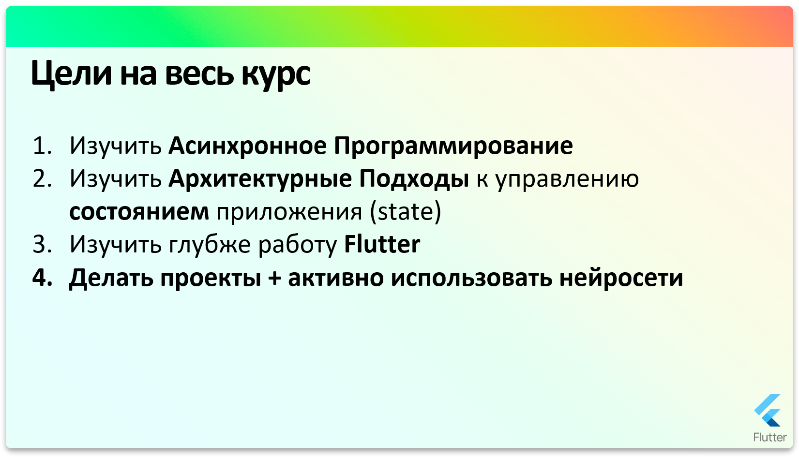
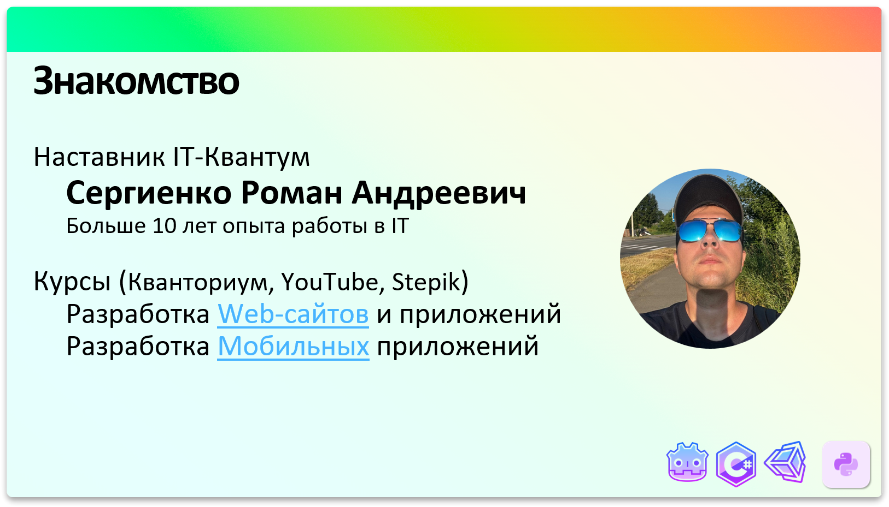
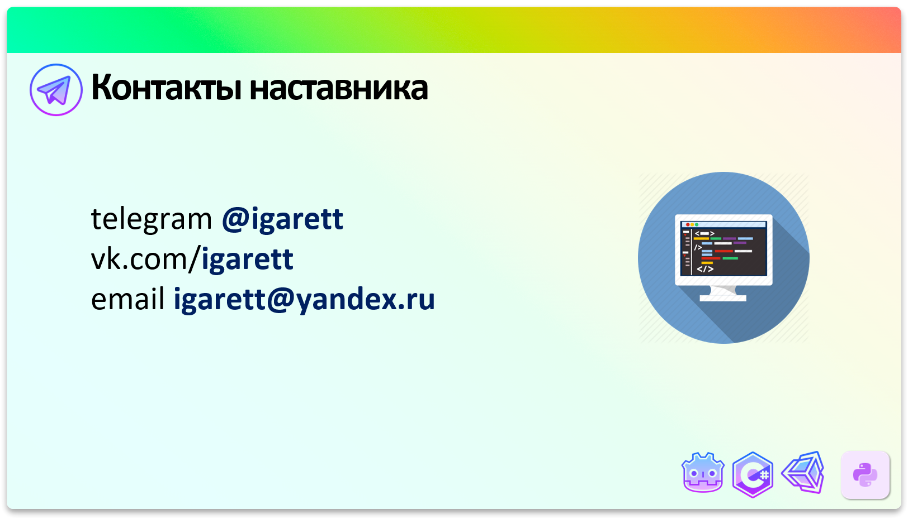
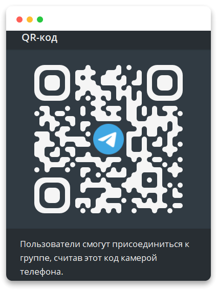
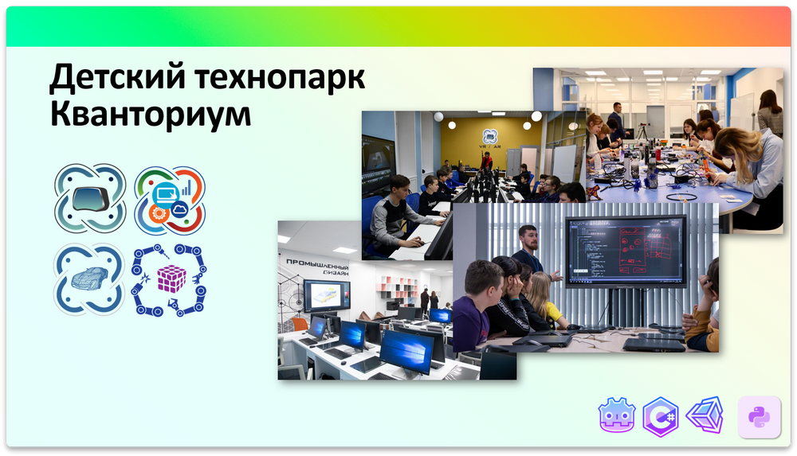
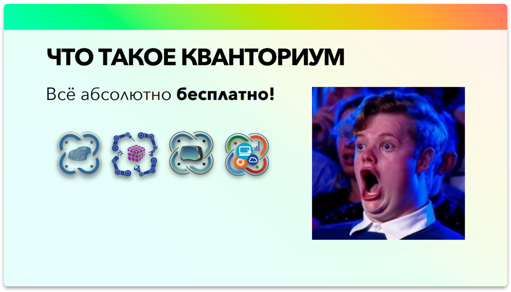
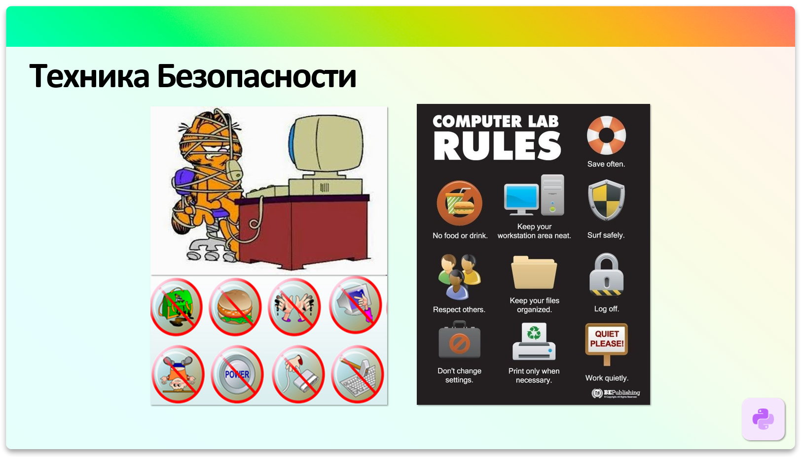
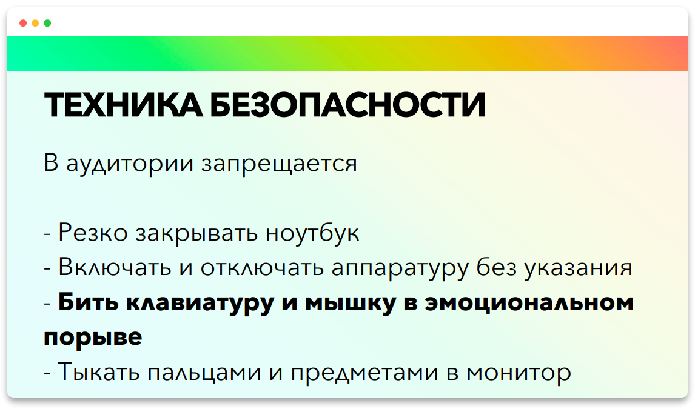
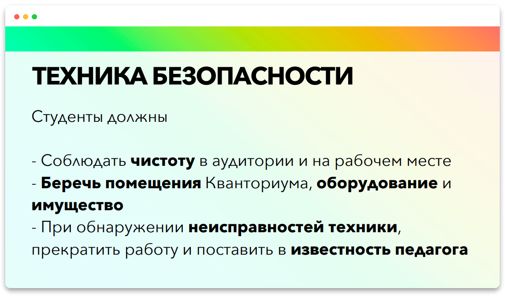

Вводное занятие
Привет! Теперь мы прокачались до проектного модуля! 😎
Продолжаем изучать Flutter разработку на более профессиональном уровне!
План и цели Занятия

Цели на весь курс
- Изучить
Асинхронное Программирование - Изучить
Архитектурные Подходык управлению состоянием приложения (state) - Изучить глубже работу
Flutter - Делать
проекты+ активно использоватьнейросети
Знакомство
Я кратко расскажу о себе, потом вы кратко расскажите про себя, для этого я подготовил специальную Yandex Форму.
Задавайте любые вопросы — это важно!
Наша главная задача создать дружелюбную и расслабленную атмосферу. Ведьобучение и творчество (а программирование — это именно творчество!) работают лучше всего, когда мы чувствуем себя спокойно и уверенно. Так мы сможем полностью погрузиться в процесс и абстрагироваться от всего лишнего.
Меня зовут Сергиенко Роман Андреевич.
В ближайшие, примерно пол года (108 часов, 4 раза в неделю), я буду вашим наставником по проектному модулю IT-Квантум

Есть небольшой YouTube канал по Flutter разработке youtube.com/c/codeandartMain
Запустил на платформе Stepik платный курс по Flutter Flutter Разработка 2025
Больше 10 лет работаю в области IT и последние несколько лет как преподаватель.

Форма
Вступите в канал и группу в телеграмме IT-Квантум.Бийск Группа

Заполните Форму Ученик IT-Квантум 2025
Потратим на это минут 10-15 не спешите, всё аккуратно заполните.
Что такое Кванториум
Полное название Детский технопарк «Кванториум»
Это место, оснащенное высокотехнологичным оборудованием, нацеленное на подготовку новых высококвалифицированных инженерных кадров, разработку, тестирование и внедрение инновационных технологий и идей.

Сейчас нам доступны такие возможности, которые раньше представить было просто невозможно, про интернет, можно уже промолчать, а теперь целый огромный технопарк с различными направлениями.
IT - КвантумVR/AR - КвантумПромдизайн КвантумРобо КвантумХайтек КвантумНано КвантумШахматы и Английский язык
И самоё главное! Ультимативный аргумент! Всё это доступно вам абсолютно БЕСПЛАТНО!

Как вы уже сами понимаете, невозможно представить нашу жизнь без IT (информационных технологий), без наших любимых гаджетов, умных микроволновок пылесосов, чайников и т.п., без YouTube, ТикТока, умной Яндекс Алисы, … перечислять можно бесконечно!
Рост и развитие технологий нереальный! Следовательно, нереальное количество идей, которые можно и нужно реализовывать, или, которые ещё даже не придуманы.
При всём этом существует катастрофическая не хватка грамотных специалистов и инженеров.
Поэтому освоение IT технологий всегда было перспективным занятием, а сейчас стало актуальным как никогда!
Несколько лет назад умные люди в правительстве подумали и решили сделать МЕГА проект для поднятия уровня IT, на всю страну, для каждого региона и чуть ли не для каждого города или деревни. Если кратко так появился Кванториум.
В Кванториум вложены просто нереальные миллионы денег, и куплено самое топовое и шикарнейшее оборудование.
Более подробно можно изучить официальную информацию по ссылке https://roskvantorium.ru
Образовательная траектория
Обучение в Кванториуме состоит из 3 модулей
Вводный Модуль
Углубленный Модуль
Проектный Модуль
Форма обучения на этом курсе
Кратко обсудим как будем учиться на этом курсе.
💡 Я сторонник уклона в практику, потому что только самостоятельное изучение и набивание шишек приводит к настоящему результату.

Поэтому постараемся больше решать практическим задач и повышать свой уровень и скилл в этом деле.
- Первую половину занятия (~45-50 минут) я даю небольшую теорию в режиме презентации. Я что-то делаю вы за мной повторяете, вместе тестируем и разбираем материал.
- 5-10 минут обязательно отдыхаем, встает, делаем разминку, чтобы мозговое кровообращение улучшить, отвлекаемся от монитора, даем глазам отдых.
- Самое главное! Делаем практические задачи! (Не успеваете, по возможности и по вашей загруженности, делайте дома. Позже я посмотрю ваше решение и дам фидбек).

Как правильно учиться
- Сначала воспринимаем информацию (слушаем, читаем, повторяем, переписываем)
- Прогоняем полученную информацию через себя (придумываем ассоциации, примеры, эмоции, связанные с ними)
- Применяем на практике полученные знания (снова и снова) !!!
Пункт №3 самый важный!!!, 2 первых пункта со временем улетучиваются из памяти (20% из 100% возможно останется в памяти, остальные 80% испарятся быстро, действует так называемый Закон Парето), самое главное на практике это самостоятельно работать получать шишки, пересиливать себя, не расстраиваться и не сдаваться, но в итоге прийти к результату самостоятельно, и именно тогда и начинается обучение и запоминание и понимание (образуются прочные нейронные связи в мозгу)
И какое у нас будет самое классное и верное чувство и ощущение? ...
Тупить!
Самое классное и верное чувство которое у нас будет в начале (да и не только) это тупить, сильно тупить )))
Как правильно учиться?
Тупить это замечательно, значит пошел процесс познания! С первого раза может, а скорее всего и будет не получаться. На данном этапе не в коем случае не нужно расстраиваться, отчаиваться и тем более все бросать!
Все проходят через эти эмоции, главное их правильно распознать!!
Не получилось с первого раза, пробуем, 2,3,4 .. 10 раз. И на 11 раз когда начнёт получаться, вы будете чувствовать себя великолепно!!!
Вы сами смогли добиться результата, сами во всём разобрались, изучив при этом много материала по ходу дела. Вот именно тогда и произошел процесс обучения, нейронные связи окрепли в мозгу, и такое вам уже будет забыть сложней, а применить в будущем конечно же проще.
- В первую очередь тренируйте базовые навыки
- Пишите код
- Занимайтесь регулярно
- Вам должно быть непонятно
- Вам должно быть интересно
Поэтому тупим, получаем удовольствие и в итоге добиваемся результата.
💡 Важный момент, процесс обучения и программирования должен приносить вам настоящее удовольствие. Поэтому принимайте самое активное участие в практических и домашних заданиях.
Техника безопасности



Практическая часть